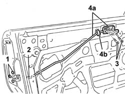

7005C54 FRONT SIDE DOOR INTERNAL OPENING RETURN MECHANISM (WITH HANDLE) - R R FOR REPAIR OR REPLACE WITH DIFFERENT VERSION
- Path
- Procedures > 70 FITTINGS > 7005 PASSENGER COMPARTMENT FRONT SIDE DOORS > 7005C FRONT LOCK CONTROLS > 7005C54 FRONT SIDE DOOR INTERNAL OPENING RETURN MECHANISM (WITH HANDLE) - R R FOR REPAIR OR REPLACE WITH DIFFERENT VERSION
- Kind
- repair procedure (removal / refitting; the operation number is the code)
- Applies to
- all engines; all production periods
- Interactive page
- https://sloeber94.github.io/elrnDB-aGt/en/#/125001777
Applies to: all engines; all production periods
 Removing
Removing
 Refitting
RefittingOp. 5570T90 FRONT SPEAKER - R R
Op. 7005M40 FRONT ELECTRIC WINDOW SYSTEM ECU - R+R FOLLOWING ELECTRICAL WIRING CHECK
Op. 7005A04 FRONT SIDE DOOR WATER GUARD PROTECTION - R R OR REPLACE WITH DOOR PANEL REMOVED
Op. 7005E91 PARTITION ON ONE FRONT DOOR (LH OR RH) - R R WITH DOOR PANEL REMOVED
1. Undo the bolts fixing the front door lock in order to facilitate the subsequent operation of releasing the rod.
2. Disconnect the rod from the lock retainer.
3. Undo the bolts fixing the door inner handle.
4. Release the device (4a) from the retainer (4b) and keep it.

Applies to: all engines; all production periods
Refitting
RemovingCheck that the device is not damaged.
Secure the device to the retainer.
Tighten the bolts fixing the inner handle.
Connect the rod to the lock retainer.
Fasten the front door lock using the bolts.
 | Fastening | Component | Ø | Value (daNm) |
|---|---|---|---|---|
- | Bolt | FRONT DOOR LOCK MOTOR | M8 | 16 |
Op. 7005E91 PARTITION ON ONE FRONT DOOR (LH OR RH) - R R WITH DOOR PANEL REMOVED
Op. 7005A04 FRONT SIDE DOOR WATER GUARD PROTECTION - R R OR REPLACE WITH DOOR PANEL REMOVED
Op. 7005M40 FRONT ELECTRIC WINDOW SYSTEM ECU - R+R FOLLOWING ELECTRICAL WIRING CHECK
Topics linked from this page (4)
- 5570T90 FRONT SPEAKER - R R
- 7005A04 FRONT SIDE DOOR WATER GUARD PROTECTION - R R OR REPLACE WITH DOOR PANEL REMOVED
- 7005E91 PARTITION ON ONE FRONT DOOR (LH OR RH) - R R WITH DOOR PANEL REMOVED
- 7005M40 FRONT ELECTRIC WINDOW SYSTEM ECU - R+R FOLLOWING ELECTRICAL WIRING CHECK